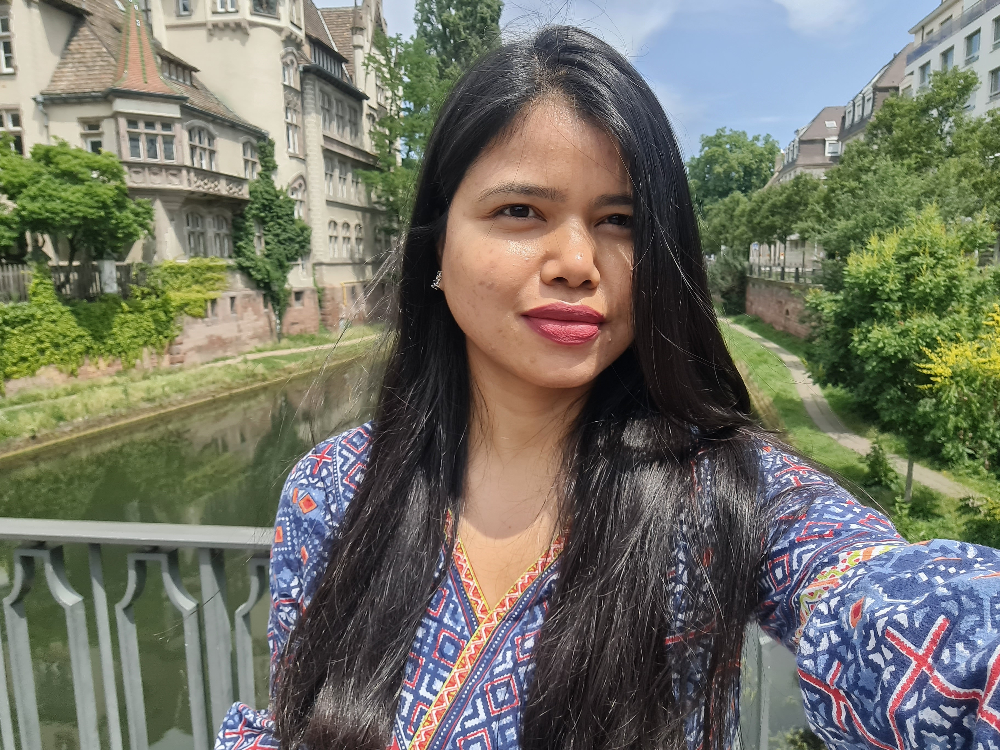
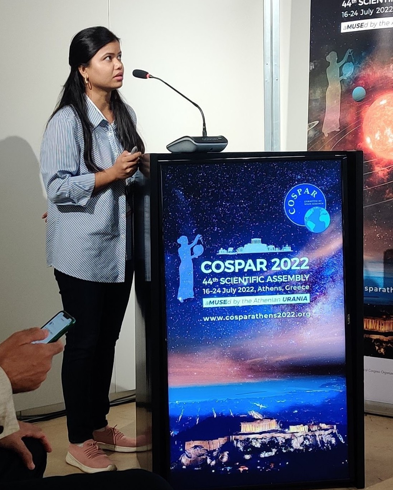
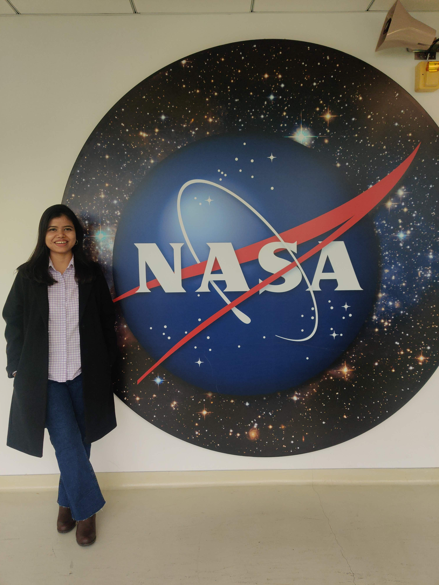
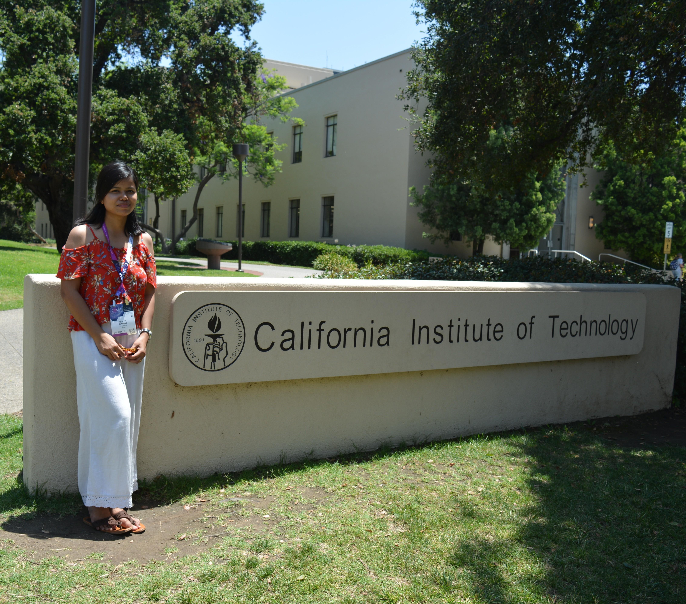
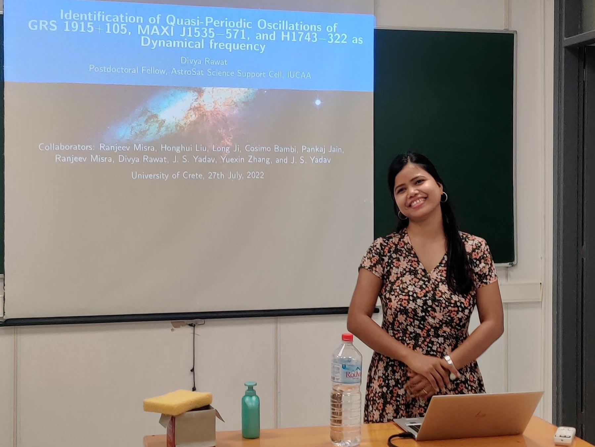
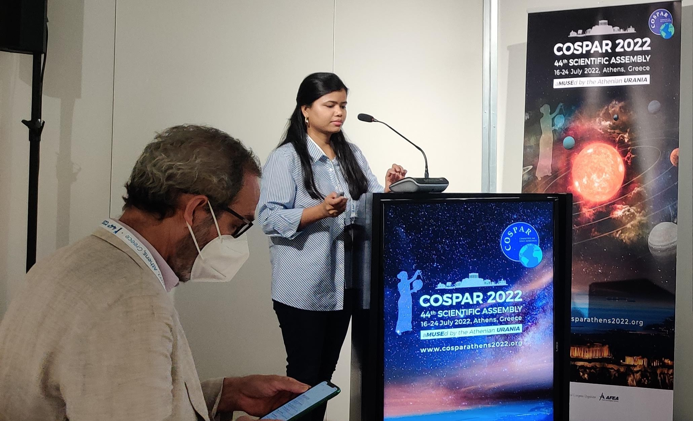
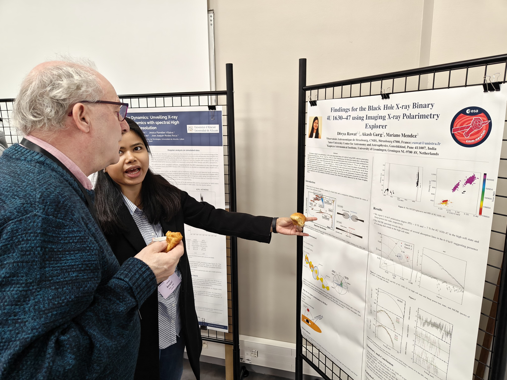
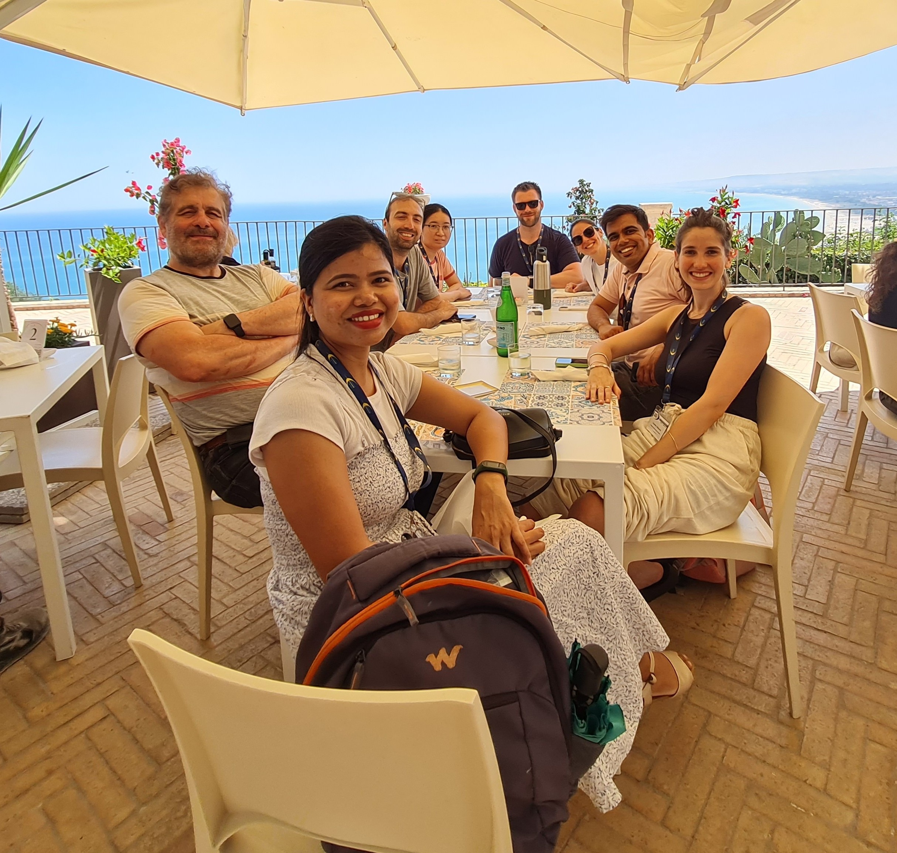
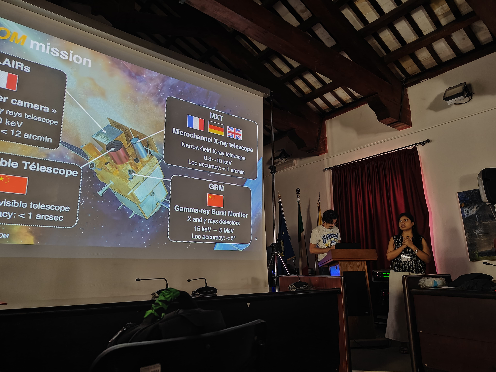
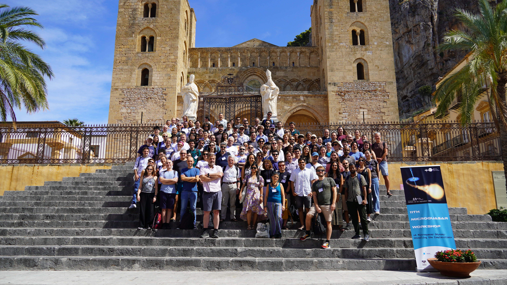

Divya Rawat
Postdoctoral Fellow, SSC XMM-Newton — Observatoire Astronomique de Strasbourg
 0000-0002-9280-2785
0000-0002-9280-2785
About Me

Hi, I am Divya Rawat, originally from the Delhi NCR region, with family roots in the Kumaon hills of Uttarakhand, India. My interest in fundamental questions about nature began during school and gradually evolved into a strong passion for physics. I completed a BSc in Physics at the University of Delhi (2011–2014) and an MSc at Banaras Hindu University (2014–2016), where I developed a deeper interest in high-energy astrophysics. I pursued a PhD at the Indian Institute of Technology Kanpur (2016–2021), focusing on accretion processes in compact objects. Afterward, I worked as a postdoctoral researcher at the AstroSat Science Support Cell, IUCAA Pune (2021–2023), where I organized national workshops, delivered webinars, developed data analysis tutorials, and supported the broader community of AstroSat users. I am currently a postdoctoral fellow at the Science Survey Center of the XMM-Newton project at the Observatoire Astronomique de Strasbourg, France.
Publications

Latest Preprint
- 2026 Early results from the SVOM Observatory Science program, A. Coleiro, L. Tao, F. Cangemi, et al., RAA, doi:10.48550/arXiv.2607.01091arXiv
- 2026 The XMM-Newton serendipitous survey. XI. The fifth XMM-Newton serendipitous source catalogue — under review, A&A, draft PDFUnder review
Refereed
- 2025Contemporaneous X-ray and Optical Polarization of EHSP Blazar H 1426+428, ApJL, 988, L50
- 2025Evolution of the Comptonizing medium of the black-hole candidate Swift J1727.8−1613 along the hard to hard-intermediate state transition using NICER, A&A, 697, A229
- 2024Evolution of QPOs in GX 339–4 and EXO 1846–031 with Insight-HXMT and NICER, ApJL, 971, 2, 148
- 2024Unveiling the X-ray polarimetric properties of LMC X-3 with IXPE, NICER, and Swift/XRT, MNRAS, 531, 1, 585–591
- 2023Spectropolarimetric study of 4U 1630-47 in steep power-law state with IXPE and NICER, MNRAS, 525, 1, 661–666
- 2023Testing the dynamic origin of Quasi-periodic Oscillations in MAXI J1535-571 and H 1743-322, MNRAS, 524, 4, 5869–5879
- 2023Detection of X-Ray Polarized Emission and Accretion-disk Winds with IXPE and NICER in the Black Hole X-Ray Binary 4U 1630-47, ApJL, 949, L43
- 2023Flux-resolved Spectropolarimetric Evolution of the X-Ray Pulsar Hercules X-1 Using IXPE, ApJL, 948, 1
- 2023A NICER look at the jet-like corona of MAXI J1535-571 through type-B quasi-periodic oscillations, MNRAS, 520, 4
- 2023The comptonizing medium of the black hole X-ray binary MAXI J1535-571 through type-C quasi-periodic oscillations, MNRAS, 520, 1, 113–128
- 2022The evolution of the corona in MAXI J1535-571 through type-C quasi-periodic oscillations with Insight-HXMT, MNRAS, 512, 2, 2686–2696
- 2022Time-resolved spectroscopy on the heartbeat state of GRS 1915+105 using AstroSat, MNRAS, 511, 2, 1841−1847
- 2021Testing Evolution of LFQPOs with Mass Accretion Rate in GRS 1915+105 with Insight-HXMT, ApJ, 909, 63
- 2020Identification of QPO Frequency of GRS 1915+105 as the Relativistic Dynamic Frequency of a Truncated Accretion Disk, ApJL, 889L, 36
- 2019Study of Timing Evolution from Nonvariable to Structured Large-amplitude Variability Transition in GRS 1915+105 Using AstroSat, ApJ, 870, 4
- 2018Extensive Broadband X-Ray Monitoring During the Formation of a Giant Radio Jet Base in Cyg X-3 with AstroSat, ApJL, 853, 11
Non-refereed / Conference Proceedings
- Exploring the origin of type-C Quasi-periodic Oscillations in black hole X-ray binaries, MAXI J1535-571 and H 1743-322 — COSPAR-2024 Assembly, Busan, South Korea
- Polarimetric Findings for the Black Hole X-ray Binary 4U 1630-47 using Imaging X-ray Polarimetry Explorer — COSPAR-2024 Assembly, Busan, South Korea
- Soft Spectro-polarimetry of X-ray Binaries LMC X-3 and Her X-1: IXPE Insights and Future Prospects with XpoSat — COSPAR-2024 Assembly, Busan, South Korea
- Study of comptonizing medium of BHXRB MAXI J1535−571 using time-dependent comptonization model — COSPAR-2022 Assembly, Athens, Greece
- Corona evolution of MAXI J1535-571 revealed by type-C quasi-periodic oscillations observed with Insight-HXMT — COSPAR-2022 Assembly, Athens, Greece
- Probing the heartbeat state of GRS 1915+105 with time-resolved spectroscopy using AstroSat — COSPAR-2022 Assembly, Athens, Greece
- Rms-spectra study of Low-frequency QPOs in Black hole binary systems using NICER — COSPAR-2021 Assembly, Sydney, Australia
- Identification of Quasi-Periodic Oscillations of a black hole system — COSPAR-2021 Assembly, Sydney, Australia
- Study of Timing Evolution from Nonvariable to Structured Large-amplitude Variability Transition in GRS 1915+105 Using AstroSat/LAXPC — COSPAR-2018 Assembly, Pasadena
Non-Scientific Conference Proceedings
- My experience with COSPAR Capacity Building and COSPAR visiting fellowship — COSPAR-2021 Assembly, Sydney, Australia
Projects
Research Interests
My research interests include the study of accretion disks in compact objects, the investigation of relativistic jets and their relationship with the accretion disk, accretion geometry, and quasi-periodic oscillations and their connection to accretion, corona, and disk instability. I have utilized observations from X-ray observatories such as AstroSat, NICER, Swift, NuSTAR, and IXPE for my research, working with data analysis software including HEASoft, the LAXPC pipeline, the SXT pipeline, NICERDAS, GHATS (General High-Energy Aperiodic Timing Software), and NuSTARDAS.
XMM-Newton Serendipitous Source Catalogue & Cross-matching Pipeline
At the Observatoire Astronomique de Strasbourg, I contribute to updating the XCat-DB interface, which hosts all sources in the XMM archive catalogue, drawn from more than 200 catalogues held primarily at CDS (Strasbourg Astronomical Data Center). Building on this, I developed an automated workflow for spectral energy distributions (SEDs): generating Multi-Order Coverage (MOC) maps from exposure maps, cross-matching the resulting sources, and producing SEDs for stacked observations. The cross-matching is performed using the Astronomical Resource Cross-matching for High Energy Studies (ARCHES), hosted in Strasbourg, to identify multi-wavelength counterparts in collaboration with CDS facilities such as SIMBAD and NED.
This pipeline directly supports Strasbourg's role in official XMM-Newton interfaces and data subsystems, which cover data extraction, catalogue production, and cross-identification. I have contributed to production of the 5XMM catalogue — performing systematic screening of 20% of the total stacked datasets, in collaboration with Natalie Webb (IRAP, Toulouse), to identify background and instrumental artefacts that could compromise detection reliability. The resulting catalogue expands the X-ray source population by ∼40% compared to 4XMM-DR14, making it the largest collection of X-ray sources to date and a premier archive for population studies and searches for extreme objects. The catalogue draft paper, currently under review, is available here, and the catalogue itself is available on the IRAP webpage.
Scientific Collaborations & Mission Memberships
- Affiliate scientist of the SVOM mission and member of the Science Working Group on X-ray binaries (2025–present).
- Member of Science Working Group 4 (Compact Objects) of the NewAthena mission (2025–present).
- Contributing member of the XMM-Newton Science Survey Center (SSC) Consortium (2023–present).
Teaching Experience
- Qualified for Maître de Conférences – CNU Section 34 (Astronomy & Astrophysics), March 2026.
- Teaching Assistant for PHY337, High Energy Astrophysics of Binary Star Systems (PhD level), 2020.
- Teaching Assistant for PHY305, Physics of the Universe (B.Tech/MSc level), 2018.
- Teaching Assistant for PHY101A and PHY101B (B.Tech level), four semesters, 2017–2018.
Gallery








Appearances in Popular Media
Links to appearances of our research work in the popular media: